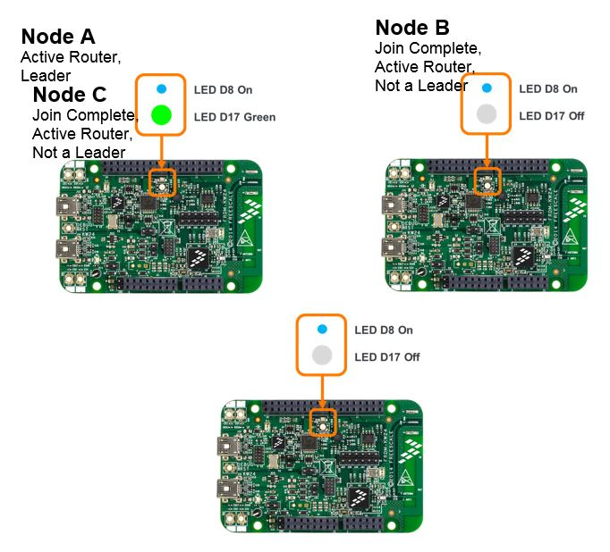

Note: the images used in the detailed steps assume using FRDM-KW24D512 platform for Node A and Node B.
To announce a node as a Data Sink using a board button switch action
take the following steps:
- Data sink announcements work only if devices are already joined to the
network. All following steps assume the steps of joining Node B and Node C to the
network created by Node A have been performed as shown in section Steps to Create
a Network and Joining a New Device. Node A, Node B, and Node C should be
Active Routers.

- Check that a data sink is not active and LED control messages are
multicast:
- On Node A: press button switch for LED ON (SW3 for FRDM-KW24D512)
- On Node B and C: note that the LED turns on (the RGB LED D17
turns on FRDM-KW24D512)
- On Node B: Short press button switch to Create Data Sink (SW1 for
FRDM-KW24D512)
- On Node A: press button switch for LED OFF (SW4 for
FRDM-KW24D512)
- On Node B: note LED has gone off
On Node C: note LED has NOT gone off
A Data Sink has been created with Node B as a
concentrator. Node C and Node A no longer receive LED control messages from other
devices which are now unicast to Node B
- On Node C: check that the LED ON and LED OFF buttons only control
Node B LED, but not Node A
- On Node B: Long press (press and HOLD 2-3 seconds) switch
button to Release Data Sink (SW1 for FRDM-KW24D512)
- On Node A and Node C: check that the LED ON and LED OFF
buttons now have reverted back to multicast behavior controlling all other
nodes.